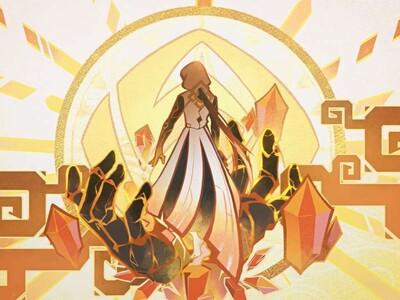

钟离
基础信息
称号：尘世闲游
神之眼：岩
武器类型：长柄武器
所属：璃月
生日：12 月 31 日
游戏角色 《原神》钟离
角色故事
钟离是应 “往生堂” 邀请而来的神秘客卿，实则为岩王帝君摩拉克斯的化身。他样貌俊美，举止高雅，学识渊博，对璃月传统了如指掌。在璃月，他曾以岩王帝君的身份统御璃月，被尊为 “契约之神”“商业之神”“历史之神” 等。
能力介绍
普通攻击・岩雨剑法：进行至多五段的连续枪击，重击时消耗一定体力，向前方突进并造成岩元素伤害。
元素战技・地心：创造岩脊，对周围敌人造成岩元素伤害，岩脊可作为护盾，吸收伤害，且能与其他岩元素创造物产生共鸣，造成伤害。
元素爆发・天星：召唤巨大的岩牢，对范围内敌人造成岩元素伤害，并使其石化，在石化期间，敌人无法行动且受到的伤害增加。
命之座
岩牢之主：地心创造的岩脊的生命值提高。
玉璋护盾・改良：天星技能所产生的玉璋护盾，能额外吸收对应元素类型的伤害。
悬岩宸断・精进：元素战技 “悬岩宸断” 的技能等级提高。
炊金馔玉・改弦：元素战技创造的岩脊在存在期间，会周期性为附近的角色恢复生命值。
岩王帝君的尊严：元素爆发 “天星” 的技能等级提高。
天地万象：当钟离的护盾被破坏时，会为附近的队友提供岩元素伤害加成和护盾强效加成。
推荐装备
武器推荐：护摩之杖、贯虹之槊、决斗之枪、西风长枪等。
圣遗物推荐：磐岩套、华馆套等，主词条选择生命值、防御力、岩元素伤害加成等，副词条优先选择暴击率、暴击伤害、元素充能效率等。
队伍搭配
钟离可与多种角色搭配，如胡桃、魈、甘雨等。与胡桃搭配时，钟离提供护盾和控制，保证胡桃的输出环境；与魈搭配，能为魈提供护盾和增伤；与甘雨搭配，可以帮助甘雨更好地站场输出，同时利用岩元素与冰元素的反应打出更高伤害。
